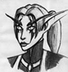

Les Terres de Kirin Tor
Jaylini
Points : 0

Joué par :
[ Information masquée ]
Age : 223
Lieu de naisance : Quel'thalas
Signe de naissance : Panda
Sexe : Femme
Race : Elfe
Faction : Alliance
Formation : Voleur
Niveau : 52
Guilde : Tisseurs de Paix
Artisanat 1 : Couturier
Artisanat 2 : Dépeceur
Description :
Jaylini est un personnage assez polyvalent, elle n'a donc pas le même visage pour tout le monde.
Pour certains, c'est une couturière qui habille le "Tout-Hurlevent".
Mais certains savent qu'elle coud aussi pour l'orphelinat...
Pour d'autres, c'est une furtive très efficace, envoyée en Outreterre pour aider à contrer la Légion Ardente.
Mais certains se demandent si ce n'est pas pour se défouler...
D'autres encore la connaissent comme une pacifiste engagée, Tisseuse de Paix activiste auprès du charismatique Crileloup.
Mais certains la savent impliquée dans d'autres enjeux politiques, plus troubles...
Les elfes enfin, se demandent ce que c'est que cette petite kaldorei aux oreilles trop pointues, aux yeux parfois trop rouges...
...et ceux qui savent la vérité se comptent sur les doigts d'une main de troll.